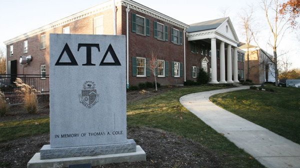

The 50 Best Colleges For Greek Life

Fraternities, sororities – Greek life. Thanks to movies like Animal House and Old School the very words conjure up pictures of wild parties and crazy college students, but these movies have created a picture that is not entirely accurate. Fraternities and sororities are “value-based organizations dedicated to the development of character and lifelong friendships.” Greeks don’t only behave like the movies portray but also have a positive influence on campus, are known for their philanthropic efforts, academic achievement, and community building. Becoming involved in fraternity or sorority can be one of the best choices an undergraduate makes, as the Greek community becomes a family away from home.
We have compiled a list of the best colleges and universities for Greek life – schools where participation is high, criminal offenses are low, and current Greeks are satisfied with their experience. This ranking was made based on the following criteria:
• Percentage of students enrolled in Greek life.
• Number of Greek organizations on campus.
• Greek organizations must be chapters of National organizations, such as, but not limited to, the Panhellenic Conference, Interfraternity Council, or Multi-Cultural Greek Council.
• Number of criminal offenses occurring on campus during 2011-2013.
• Average Greek Rank rating.
50. Denison University

At Denison University, “members of the Fraternity/Sorority Life community are exposed to a support network that provides them with life skills, social experiences, and the opportunity for growth in their college careers.” There are over 700 students enrolled in a fraternity or sorority, representing 34 percent of the student body. The university holds Greek chapters to a high standard, and over the past years has placed several chapters on suspension due to violations of the Student Code of Conduct; the Kappa Sigma chapter was restored to good standing at the beginning of fall semester 2014. Denison University was founded in 1831 and is a private, liberal arts college in Granville, Ohio, which is located 30 miles east of Columbus.
49. Villanova University

Over 6,100 students at Villanova University are members of a fraternity or sorority, which is about 30 percent of the student body. With a focus on philanthropic endeavors, fraternities and sororities raised over $178,000, collected 650 articles of clothing, 4,600 pounds of canned food, donated 200 pints of blood, and completed over 24,000 hours of service for various causes in 2012. In addition to these generous donations, Greeks at Villanova maintained a 3.36 GPA. There are 24 different Greek chapters to choose from, each with a different focus. Villanova University is the oldest Catholic University in Pennsylvania and is located in the northwest suburb of Philadelphia.
48. Lafayette College

A private, liberal arts college located in Eaton, Pennsylvania, Lafayette College, is home to over 2,400 students; 35 percent of these students are members of the fraternity and sorority community. There are 10 Greek chapters on campus. During the 2014 academic year, about $50,000 was raised by the fraternity and sorority community at Lafayette. Lafayette College participates in the Order of Omega, a leadership honor society for fraternity and sorority members. Order of Omega recognizes juniors and seniors who have exemplified high standards in scholarship and leadership in their respective communities. There are over 500 chapters recognized in North America, and Lafayette College is home to the Rho Tau Chapter, which was chartered on March 15, 1999. Members are selected from the top 3 percent of the fraternity/sorority population. This honor is an excellent addition to Greek life at Lafayette College.
47. Bucknell University

Bucknell University was founded in the late 19th century and now offers more than 50 majors relevant to today’s global issues. With a 9:1 student to faculty ratio and no grad taught courses, students at Bucknell receive an excellent education. An integral part of student life at Bucknell is the eight fraternities and eight sororities. Recently, the Panhellenic Council committed to the national No More Campaign, donning T-shirts and raising awareness to end sexual violence and assault. The IFC, Panhellenic, and Kappa Delta Rho held a 5K Obstacle Course Run and raised over $12,000 for the B+ Foundation to fight childhood cancer. In 2013, Greek organizations raised over $13,000 in the Million Penny Project for recreation programs in Lewisburg. Overall, with 41 percent of students involved, Bucknell Greek life is active and vibrant.
46. The University of North Carolina – Wilmington

In 1947, the doors opened at Wilmington College. This small school has grown into the University of North Carolina-Wilmington, with 13,000 students, 55 degrees, and located at a Georgian-style architecture, beautifully landscaped campus. There are currently 28 Greek fraternities and sororities at the University of North Carolina-Wilmington. For the 2014 academic year, UNCW fraternities and sororities donated over 25,500 hours of community service and raised over $75,000 for philanthropic groups. Besides friendship and social events, the 3.17 all-Greek GPA remains higher than the non-Greek GPA. Greek life at UNCW is an excellent way to become involved in campus life, give back to the community, and form life-long friendships.
45. Presbyterian College

Established during Reconstruction in 1880, Presbyterian College is located on a beautiful 240-acre campus between Columbia and Greenville, South Carolina and is associated with the Presbyterian Church U.S.A. Founded upon Christian ideals and inspired to support scholarship, community service, leadership PC embraces Greek-letter organizations as an important part of the campus community. The first Greeks arrived in 1890 and today approximately 45% of undergraduates are members. There are six national fraternities and three national sororities on campus. All students agree to a student-maintained honor code, a tradition dating back to 1915 and seek to live PC’s motto “While We Live, We Serve.”
44. Allegheny College

Tradition is strong amongst Greeks at Allegheny College; the fraternity and sorority communities represent over 150 years of leadership, campus involvement, academic excellence, community service and social development. Traditions include the “Run-Out”, where each chapter introduces its new members to campus, and “pinnings” on Brooks balcony, where a chapter gives their badge to a significant other during a chapter ceremony. These traditions are just a small part of the overall comradery and strong community life that the ten Greek organizations at Allegheny College provide. Each chapter typically provides over 7,000 hours of community service each year, and academically, members of fraternities and sororities perform at or above the all-College GPA average.
43. Northwestern University

Founded in 1851 to serve the Northwest Territory, Northwestern University is now a private research university with campuses in Evanston and Chicago, Illinois. Northwestern is composed of 12 schools and colleges, offers many different degrees, and serves about 20,000 total students, over 8000 of which are undergraduates. As a large university, there are many choices, opportunities, and diversity in Greek life. Northwestern currently has 47 values-based chapters across four governing councils that range in mission. The total membership of more than 3,000 students comprises 40 percent of the campus community. One campus initiate is the Dance Marathon. Now in its 42nd year, Northwestern University Dance Marathon (NUDM) is one of the largest and most well established student-run philanthropies in the nation. Since its founding in 1975, Northwestern students have raised over $16 million in support of over 30 different beneficiaries, annually raising over $1 million for each of the last five years.
42. Furman University

Furman University is South Carolina’s oldest private institution of higher learning and now serves 2,700 undergraduate students on its beautiful 750-acre campus. There are over 150 student organizations and 1,800 students are involved in volunteer activities. Greek Life is central to Furman’s student life, with 50 percent of students involved in 13 Greek organizations. At Furman, new students have a chance to look into which fraternity or sorority they are interested in with a deferred recruitment in January. According to the school website, in Spring of 2013, Greeks raised $117,642 for national and local philanthropic organizations, completed 10,827 service hours in the greater Greenville community, and place 408 Greek students on the Dean’s List.
41. Bradley University

Greek life is booming at Bradley University, with 33 percent of the undergraduate population involved in one of the 27 fraternities or sororities on campus. Being actively involved in fraternity and sorority life is amongst the most rewarding college experiences that Bradley has to offer. As a whole, Greeks make up the largest student group on campus, with more than 1,400 students involved. Through philanthropic efforts, Greeks at Bradley have served over 11,200 hours and raised $70,645 for various charities. Not only are students serving their local community, members of fraternities and sororities at Bradley are forming bonds of friendship that last a lifetime. Bradley University is a private university located in Peoria, Illinois.
40. High Point University

High Point University is a private liberal arts university in High Point, North Carolina. It is affiliated with the United Methodist Church. With 4,200 students, there are 15 Greek organizations, many of which are active in local philanthropic agencies as well as national. Last year, one sorority received the Family Service of the Piedmont Outstanding Service Award. Other highlights include a fraternity that made donations of over $45,000 to the Jimmy V Foundation in the Spring and Fall of 2014. Also notable, in April 2015, 254 students were inducted into the newest honor society, Alpha Lambda Delta. Their mission is to encourage superior academic achievement, to promote intelligent living and a high standard of learning, and to assist students in recognizing and developing meaningful goals in society.
39. Dartmouth College

Dartmouth College is a private, Ivy League research university located in Hanover, New Hampshire. There are 16 fraternities, ten sororities, and 3 gender inclusive fraternities. Fifty-one percent of students at Dartmouth are members of a fraternity or sorority. Dartmouth Greeks maintain high academics and work hard to give back to the community. The Philanthropic All American Rush (P.A.A.R) is a unique Greek experience that consists in a competition between Greek organizations in order to fundraise for the Children’s Hospital at Dartmouth. In 2014, Greek chapters raised $108,769 for the Norris Cotton Cancer Center at Dartmouth-Hitchcock Hospital, and through P.A.A.R., raised $34,249, which was doubled by Positive Tracks, to make a total donation of $68,498 to the Children’s Hospital at Dartmouth. In step with an excellent education, students can expect the same quality of Greek life at Dartmouth.
38. Tulane University

Founded in 1834 in New Orleans, Tulane University offers degrees in architecture, business, law, liberal arts, medicine, public health, the sciences and engineering, and social work. Tulane has about 13,500 total students and 41 percent of undergraduates are involved in Greek Life. All Greek chapters are organized under four umbrella organizations and Tulane also recognizes a chapter of the National Order of Omega Greek honor society. Part of the Greek mission at Tulane is to “foster a positive co-curricular experience for students who choose to affiliate with a Greek organization. Through its various programs, the department is committed to supporting the valuable learning experience that the Greek community offers.”
37. Millsaps College

With a rich history and tradition of Greek life and 64 percent of students engaged as such, Millsaps four sorority and six fraternity chapters shine bright. In 2014, the Millsaps College Panhellenic Council received the Make a Difference Award, one of the top awards given by the National Panhellenic Conference, of which only two were given nationally. The Millsaps Panhellenic Council was lauded for its work with Operation Cinderella Story, a dress drive for the Midtown Community Development Center and students from Rowan Middle, as well as partnering with Stop Hunger Now to pack food boxes for 6,000 people, making 372 bookmarks for the literacy program at Brown Elementary School in the Midtown neighborhood in Jackson, and for implementing new educational programs to address alcohol poisoning, eating disorders, hazing and bullying. These philanthropic efforts by Millsaps Greeks make it one of the top schools for being a Greek.
36. Drake University

For 75 years the Greek Life system at Drake University has helped develop strong relationships, leadership, and community involvement. With 14 fraternities and sororities, students have ample opportunity to find the Greeks they’re looking for. One example of the thriving Greek life at Drake is Kappa Alpha Theta’s philanthropy. Kappa Alpha Theta helps support CASA, which stands for Court Appointed Special Advocates. The organization provides advocates to children who suffer from abuse or neglect. They also have the Theta Foundation, which is a scholarship program to help fellow sisters in the sorority afford tuition expenses. The foundation was created in 1960 and awards over $1 million annually to sisters in need. This amounts to more than 200 scholarships annually. With Greek chapters like this, it is easy to see why Drake is an excellent for its fraternity and sorority life.
35. Hampden-Sydney College

Hampden-Sydney College, a men-only college, has a long history dating back to the 18th century. “The college expects its students to be gentlemen of good moral character and to be active and informed participants in the life of their communities.” With more than 60 clubs ranging from philanthropy and service to athletics and music, 14 honor societies, eight social fraternities, and the outdoors a step away, Hampden-Sydney has something to suit just about any man. Fraternities have existed at for over 150 years, and as of 2012, about 30 percent of students are members. There are eight social fraternities at Hampden-Sydney with national affiliation. Hampden-Sydney fraternities are dedicated to high academics, great social events, and community service. Overall, high standards permeate Greeks at Hampden-Sydney.
34. Gettysburg College

Greek life at Gettysburg College is as vibrant as academics. Founded in 1832 with a rigorous commitment to the liberal arts, more than 69 academic programs, and 2,600 students, Campus life is lively. There are more than 120 student clubs and organizations and nearly 800 events per year that range from talks by world leaders to art exhibitions, concerts, comedy nights, coffeehouses, films, and theater productions. Gettysburg College Greek life is comprised of seven sororities and nine fraternities and 41 percent of undergraduates are involved. Last year Greeks gave 3,023 service hours and donated $17,500 in philanthropy.
33. Elon University

Elon University is home to 22 international fraternities and sororities, offering a diverse mix of Greek chapters providing students the opportunity to search for one that matches their values and personalities. Each year, fraternities and sororities at Elon are reviewed through an evaluation program known as the Standards of Excellence. Chapters that meet and exceed the community-wide standards are recognized based on six areas: intellectual development, effective leadership, responsible citizenship, inclusive environments, and values integration. Serving as a combination of both fraternal values and Elon standards, this annual evaluation provides accountability while honoring Greek life at Elon University.
32. Illinois Wesleyan University

The mission of Illinois Wesleyan University is to “foster the traditional liberal arts of creativity, character, and knowledge.” This liberal arts college, located in Bloomington, Illinois, lives up to its mission in many ways, one of which is through a thriving Greek community. Fraternities and sororities at Illinois Wesleyan are overseen by the Fraternity & Sorority Programming Board (FSPB), a shared organization between the governing councils in the community. Philanthropy is a key focus. Every February the FSPB hosts an annual philanthropy pageant competition, Greek God and Goddess. Each fraternity and sorority sponsors a contestant who competes to win a split of the proceeds from the event to benefit the philanthropy of choice. There are four categories that the contestant competes in: toga, philanthropy presentation, talent, and interview. Each of the nine Greek organizations on campus are represented. This enjoyable event is just a snapshot of the flourishing Greek community at Illinois Wesleyan.
31. Lyon College

Lyon College has a strong and service oriented Greek life. There are a total of six Greek-letter organizations active on campus and approximately 40 percent of Lyon students are members of a fraternity or sorority. With deep history stretching back to their founding as Arkansas College in 1872, changed to Lyon in 1994, when it also created state’s only student-run Honor System, excellence is everywhere. There is a strong liberal arts tradition and Lyon College serves 700 students. With intentional goals for Greek life, there is a focus on service and safety; chapters participate in national philanthropy such as Autism Speaks. A Lyon-specific tradition that shows the positive Greek life on campus is the Chapel Walk, where each fraternity chapter introduces its new members to the whole campus.
30. Rose-Hulman Institute of Technology

Understanding the origins of Rose-Hulman sheds light on the mission, education, and campus life. It was founded in 1874 by a local businessman, entrepreneur, railroad builder, leading citizen and philanthropist Chauncey Rose and nine of his friends “for intellectual and practical education.” It is now known for being a great engineering, science, and mathematics college through a unique hands-on education. Greek life at Rose-Hulman claims 36 percent of the 2,100 undergraduates. The 11 Greek chapters “stand out as a unique and life-long involvement opportunity.” Being Greek helps make friends and network with professionals, and also provides academic accountability. The all-Greek average GPA is consistently higher than that of the independent (non-affiliated) students on campus. Some examples of philanthropy at Rose-Hulman are: Bikes for Tykes, Shop with a Cop, the annual cleanup of Hunt Road, and a Christmas celebration for the kids of Big Brothers Big Sisters.
29. Hillsdale College

Hillsdale College is a rigorous liberal arts school that was founded in 1844. Jay Nordlinger of the National Review has described Hillsdale as “the conservative Harvard.” Greek organizations are a vibrant part of Hillsdale College life. There are four fraternities and three sororities on Hillsdale’s campus and over 30 percent of students are members of Greek organizations. Hillsdale’s website states, “As a group, they’re among our highest achievers. Our fraternities and sororities stress the importance of academics, character, leadership, and service to the community and the mission of the College.” From Pancake Breakfast fundraisers for Make-A-Wish Foundation to volleyball fundraisers and more, students are dedicated to making Hillsdale a better place.
28. Wofford College

In Spartanburg, South Carolina, surrounded by beautiful trees in the historic district, is Wofford College. Founded in 1854, Wofford is an independent liberal arts school and is known for its excellent education and graduate programs. Their motto is “shines with untarnished honor.” Greek life is an essential part of Wofford with 13 chapters and 49 percent of students involved. Notable past philanthropy includes one chapter that raised $34,000 for St. Jude Children’s Hospital, serving people with disabilities through Push America, construction projects, and more. If interested in beautiful landscapes, historic sites and tradition, strong academics and a vibrant Greek life, Wofford delivers.
27. Union College

Over 200 years ago, Union College was founded. It is one of the oldest non-denominational colleges in the country with a rich history that blends respect for tradition with an emphasis on continuous innovation. The innovative combined with liberal arts is what distinguishes a Union College education. Since 1825, Greek life has been imperative at Union. In fact, it is home of six founding fraternities and the “Union Triad” – according to their website they are often recognized as the “Mother of Fraternities.” Greek life is lively on a campus of over 100 clubs and organizations. Almost 40 percent of students are Greeks enrolled one of the 18 Greek organizations. There are sororities, fraternities, honors organizations, and multicultural groups that make up this thriving Greek population.
26. Auburn University

Auburn University is one of the largest universities in the state of Alabama, with over 25,000 students. It is no wonder that Auburn is also home to a robust Greek community, with 54 Greek organizations on campus. Known for their philanthropic efforts, Greeks at Auburn support a large variety of charitable organizations including Alabama Sheriff’s Youth Ranches, ALS Association American Cancer Society, Children’s Miracle Network, Christopher Reeve Foundation, Habitat for Humanity, Humane Society, March of Dimes, Muscular Dystrophy Association, National Multiple Sclerosis Society, St. Jude Children’s Hospital, Toys for Tots, and many others. According to Greek Rank, fraternities and sororities at Auburn have an average of 68.85 percent satisfaction rating; 38 percent of Auburn students are members of a fraternity or sorority. Greek life is an excellent way to find community in a large university, and Auburn University provides many top of the line options.
25. Southern Methodist University

Southern Methodist University is a private research university located in University Park and has 10,800 students. With 200 student organizations, SMU presently recognizes 31 total Greek organizations: religious, philanthropic, and professional. About 1/3 of students at SMU are members of a Greek organization and SMU Greeks have a higher GPA on average. With so many choices, students are likely to find something interesting in terms of community service and philanthropy: literacy advocacy, children’s cancer research, or Service for Sight. In addition to philanthropy, there are ample opportunities for leadership, social bonding, and honors organizations for academically driven students.
24. Transylvania University

Thomas Jefferson was governor of Virginia when that state’s legislature chartered Transylvania University in 1780. With a rich history, Transylvania University continues to be a top liberal arts school today. Greek life is one tradition that has helped many young men and women develop personally. Fifty-three percent of the student body are members of the eight fraternity and sorority chapters. Focused on philanthropy, in 2014, one sorority raised over $25,000 for a national charity, and another organization completed over 1,500 direct service hours to local non-profit agencies. Whether forming great memories in bonds of friendship or helping raise awareness and money for the eradication of Polio, National Arthritis Foundation, or for research into Muscular Dystrophy, Greeks at Transylvania are vibrant.
23. Huntingdon College

At Huntingdon College, the purpose of Greek Life is “to create a better student experience through greater involvement in co-curricular activities and in leadership opportunities.” This is accomplished through fostering service, leadership, and scholarship. During 2013, Greek organizations from Huntingdon College served over 5,000 hours of community service and donated more than $15,000 to philanthropic organizations. In 2014, the all-Greek GPA was 3.06, and 34 of 45 new fraternity members also participated in intercollegiate athletics. Fraternities and sororities at Huntingdon play an integral part of campus life. Huntingdon College was founded in 1854 and is located in Montgomery, Alabama. The campus is listed on the National Register of Historic Places, and is known for its picturesque architecture built in the Gothic Revival and Tudor Revival style.
22. Culver-Stockton College

“The mission of Culver-Stockton College is to prepare students of promise for a dynamic world through our distinctive experiential curriculum within a supportive learning community founded upon the best values of faith and the human spirit.” Greek life is active and important for campus life. There are currently five fraternities and three sororities. Of the undergraduates, 40 percent are involved in Greek life. The average GPA among all-Greeks is 3.46. Culver-Stockton College is a private school that has 850 students, with a rich liberal arts heritage, and is located on a bluff overlooking Canton, Missouri and the Mississippi River. Culver curriculum divides the typical 15-week semester into two terms, a 12-week term and a 3-week term. During the 12-week term, students take three to four courses. During the 3-week term, most students focus on only one course.
21. Southwestern University

When Texas was a Republic, Southwestern University was chartered by Methodist missionaries. Now, Southwestern is a 175-year-old liberal arts university still “committed to fostering a liberal arts community whose values and actions encourage contributions toward the well-being of humanity.” Students at Southwestern can choose from approximately 100 organizations and nine Greek chapters. Thirty-seven percent of 1,528 students choose Greek life, and like many students at Southwestern, they are civic minded. According to the school website, “Southwestern students give more than 39,000 service hours annually to more than 100 local nonprofits and agencies…twice the national average!”
20. Ripon College

Ripon College was founded in the late 19th century in Wisconsin and serves 931 undergraduates. Ripon is known for its personalized approach to helping students learn and develop professionally. Forty percent of undergraduates are involved in one of the eight Greek organizations – three sororities and five fraternities. Students participating in sororities and fraternities live in residence halls, not houses. Ripon prides itself on not having Greeks who are not like many of the stereotypes; rather, at Ripon they are leaders and community servants. Ripon is just one of 280 select colleges and universities nationwide to hold a Phi Beta Kappa chapter (obtained in 1952), the oldest and most prestigious national honor society. In addition to solid brother and sisterhood, there is plenty of good fun: Roast pig in August and the Greek Ball in December.
19. Wabash College

Since 1832, Wabash College in Crawfordsville, Indiana has offered an excellent education for men at a naturally and architecturally beautiful location. Wabash is home to approximately 900 students. More than half of the students at Wabash live in the ten national fraternities that have chapters at Wabash. Wabash is in the process of constructing new or renovating all of the college-owned houses, part of the $30 million Fraternity Partnerships Campaign. Aware of criticism of Greek life in America, Wabash seeks to reflect their motto of “for knowledge and virtue” in Greek life. Wabash’s fraternities boast grade point averages of 3.0 or higher and contribute hundreds of hours of community service each year.
18. Chapman University

Greek life comprises an important part of life at Chapman University. There are over 2,100 students enrolled in one of Chapman’s 18 Greek organizations. The average fraternity size is 77 members while the average sorority size is 178 members. Greeks have the opportunity to participate in many philanthropic opportunities as well as community events. Greek Week is a slew of fun activities, competitions and events for chapters to participate. New executive board members participate in the Olympus Forum, a one-day leadership retreat in the spring semester, and the entire Greek community at Chapman participates in the Greek Day of Service. On this day of service, all chapters work together in service projects for various charitable causes and organizations. Whether it is service or fun, Chapman University’s Greek life is a great place to be Greek.
17. Rhodes College

Rhodes College students are active and involved – their Greek life is no different. With 50 percent of students involved in 14 fraternities and sororities, the Greeks are thriving with service projects, fundraisers for charities, social events, and leadership. Besides strong philanthropic work, there is also a leadership organization for fraternity and sorority members to achieve in academics, leadership, service, and campus involvement. For fraternity or sorority members who are seeking a higher calling, the Order of Omega fits the bill. For sorority members, the Rho Lambda offers many great opportunities. Overall, Rhodes Greek life is focused on service and leadership and continues to make a difference in countless students’ lives.
16. University of Wisconsin – Whitewater

The University of Wisconsin-Whitewater was founded in 1868 and officially joined the University of Wisconsin System in 1971. There are about 11,000 undergraduates and there are 21 Greek organizations. UW-Whitewater is dedicated to creating a Greek system that “will consist of strong leaders, who demonstrate moral and ethical conduct, as well as promote good scholarship.” In the fall semester, there is a Turtle Race, a 5K Run/Walk with all proceeds going to the Painted Turtle Camp in Lake Hughes, CA (a non-profit organization that invites children who have chronic and terminal illnesses to enjoy a camp experience for a week, completely free). There is also Hoops for Hearing, an event that raises money for Speech and Hearing, a national philanthropy.
15. William Woods University

William Woods University serves 1,100 traditional undergraduates on a 200-acre campus in Fulton, Missouri. The 140-year history of service and leadership in education has made WWU unique. As for Greek life, 41 percent of students are members of six Greek organizations. The all-Greek GPA is traditionally higher than the all-Campus GPA. Greek life at WWU is safe and positive; there have been few issues in comparison to other schools. William Woods is home to Alpha Mu Gamma, the first and largest national collegiate foreign language honor society of the United States. Also worth mentioning is Alpha Chi, a co-educational honor society whose purpose is to promote academic excellence and exemplary character among college students. Membership is limited to the top ten percent of juniors and seniors and is open to students from all disciplines.
14. Florida Southern College

Besides being home to the largest collection of Frank Lloyd Wright architecture in the world, Florida Southern College, located in Lakeland, Florida, has an exciting Greek life. With 70 buildings on 110 acres, all situated amidst an orange grove on the north shore of Lake Hollingsworth, the campus provides a terrific setting for study and recreation. Of 2,200 undergraduates, 37 percent are members of sororities or fraternities. Currently, there are seven fraternities and six sororities, all of which are dedicated to developing their members and helping them learn the importance of dedication, responsibility, working with others, and self-reliance. Florida Southern College is dedicated to ensuring a safe, positive, and healthy Greek life that gives back to the local community.
13. Whitman College

Founded in 1882, Whitman College is a private liberal arts college located in Walla Walla, Washington. Famous for its wheat fields, sweet onions, and wine, Walla Walla is near city life with Portland and Seattle close by. Greek life has been a central part of the Whitman experience for more than 100 years. There are currently eight Greek organizations and 46 percent of the 1,400 undergraduates are members. Greeks at Whitman are dedicated to high academic achievement, and the fraternity and sorority life must be conducive to study. Members are required to support one another’s academic efforts while learning from each other. With Whitman being a small school in a rural town, the campus is home to many activities of which the Greeks play a large role.
12. DePauw University

The national Alpha Chi Omega was founded 1885 at DePauw University in Greencastle, Indiana. This, along with 25 fraternities and sororities, the majority belonging to one of four governing councils, offers students the best of Greek Life. DePauw is home to one local sorority and a national Greek honor society as well. The local sorority, Psi Lambda Xi, is a good example of the kind of philanthropy you can expect from the Greeks at DePauw: A Karnival for Kids and Toy Drive for Riley Children’s Hospital raised money, toys, and school supplies that went directly to local children. With about 70 percent of students affiliated with a Greek-letter organization, DePauw shows why it ranks #12 on the list.
11. Westminster College

Since its beginnings in 1852, Westminster College has been a church-related institution. It has a beautiful 300-acre, tree-lined campus, a 100-acre outdoor laboratory and Brittain Lake. There are more than 1,400 students and 80 clubs. Of all undergraduates, 42 percent are involved in Greek life. There are currently four national fraternities and five national sororities at Westminster. Westminster College’s fraternities and sororities raised more than $19,000 in money, and the Student Government Association (SGA) collected nearly 5,000 food, clothing, toys, and other items during Greek Week 2013. In 2014, the charters raised $11,656 for the Cystic Fibrosis Foundation. Overall, there is a strong spiritual emphasis on service and charity on the campus, and the Greek life provides this for many students.
10. Albion University

Albion College originally met the educational needs of the children of Native Americans and settlers in Michigan. It has since grown into a university of 1,400 students, offering various educational options, with a 340-acre Held Equestrian Center. Greek life spans back 130 years with the school currently recognizing 12 chapters. There are also two honors fraternities: Order of Omega and Gamma Sigma Alpha. All-Greek average GPA at Albion is 3.31. When it comes to philanthropy, Albion provides many opportunities to serve – the fight against domestic violence, called “Go Purple Week,” or various fundraisers to help support the Special Olympics are a couple examples. All in all, with 53 percent of students involved in Greek organization, this campus ranks in the top 10.
9. Lehigh University

Lehigh University is a private research university in Bethlehem, Pennsylvania serving 7,100 students. Greek life is indispensable to student life at Lehigh. All the trappings of Greek life are at Lehigh: Leadership, academics, social experiences, and philanthropy. With 31 different chapters as options for students interested in going Greek, there is something for everyone. There are 43 percent of total students involved in Greek life. A unique aspect of Greek life at Lehigh is the comprehensive collaboration of the school to ensure Greek life is living up to their goals. The Office of Fraternity and Sorority Affairs (OFSA), in conjunction with the Offices of Residential Services, Student Leadership Development and the Alumni Association collaborate to accomplish such a strong Greek life on campus. The Office of Fraternity and Sorority Affairs “aspires to cultivate the premier values-based community experience in the nation.” In addition to this intentional and organized effort in making Greek life excellent, the Greek Leadership Development program aims to encourage leadership in the vibrant fraternity and sorority community.
8. Centre College

Centre College is an undergraduate four-year institution with an enrollment of approximately 1,375 students. The Centre College Greek community consists of ten organizations, six fraternities, and four sororities. Besides providing a place to develop strong bonds of friendship and great memories, service and leadership projects are important. Greeks at Centre help support the United Way, Salvation Army, St. Jude Children’s Research Hospital, mentor at-risk local school children, and sponsor city-wide canned-food drives. Centre Greeks recorded more than 9,000 service hours last year, raised more than $66,000 for charitable organizations, and Centre Greek students received more than $12,000 in national awards. With these facts, the case is clear that Centre’s Greek life is among the best.
7. Birmingham – Southern College

Birmingham-Southern College has an active student body of about 1,100 students. There are over 80 organizations for students to choose from, and Birmingham-Southern is home to 13 fraternities and sororities. Members participate is service learning trips, tutoring at Woodrow Wilson Elementary School, or volunteering at the Downtown Men’s Firehouse Shelter. BSC’s website lists their Top 5 Reasons to Go Greek: “We consider ACADEMICS a top priority. We are LEADERS on campus. We LEND a helping hand. We are CONNECTED to alums. We CREATE lifelong memories. “ BSC also maintains a roster of community partnerships coordinated by dedicated student liaisons, giving students an opportunity to get involved with ten local agencies. The Theta Chapter is proud to announce that it raised $21,000 for St. Jude Children’s Research Hospital in 2014. With this vision and experience, it is clear that BSC is a leader in Greek Life.
6. Massachusetts Institute of Technology

The first classes at Massachusetts Institute of Technology were held in 1865 in the Mercantile Building. Since those humble beginnings, MIT has become a leader in education and visionary in many scientific fields and research. What may not be known at MIT is their thriving Greek community. With 31 Greek organizations (25 fraternities, six sororities) and 45 percent of undergrads as members it goes without saying, Greek life is a key of the MIT experience. At MIT, Greek life is more academically focused and attentive to developing leadership than some of the stereotyped frats in movies. Alcohol is not allowed in the sororities and hazing, and other illegal activities are taken very seriously. Greeks are high achievers, leaders and engaged in many facets of MIT, placing it at #4 on the list.
5. Washington & Jefferson College

With two of the greatest presidents in our history for a namesake, Washington & Jefferson College doesn’t disappoint. Founded in 1781 and located in Washington, Pennsylvania, Washington & Jefferson has an excellent reputation for academics, and serves approximately 1,500 students. Perhaps less known is Washington & Jefferson’s thriving Greek life. Washington & Jefferson is home to ten Greek organizations. A look at some numbers from their website tells the story best: Fifty-seven hold executive board positions in student organizations, Greeks are involved in over 20 different campus sports teams and hold executive board positions in over 50 clubs on campus. Washington & Jefferson’s Greek organizations collectively raised $20,412 in cash donations for various projects and community groups during the 2014-15 academic year. They also clocked 1,248 philanthropy hours spent fundraising for charitable causes, and 3,844 service hours spent in hands-on service to local causes and community organizations.
4. Worcester Polytechnic Institute

Greek life at Worcester Polytechnic Institute is a central aspect of the campus atmosphere. Forty-one percent of WPI students are enrolled in one of the 19 Greek chapters. Fraternity and sorority members contribute to the campus community by helping students move in to their residence halls at the beginning of the year, hosting the Greek Carnival to welcome students back to campus with fun games, activities, and giveaways, hosting Greek Week to promote the various chapters and encourage new members, as well as sponsoring Blood Drives and performing a broad variety of community service projects. There is no doubt that Greeks at Worcester Polytechnic Institute play a positive role in the campus at large.
3. Baker University

Baker University was the first university in Kansas, thus establishing it as a place where traditions run deep. One important tradition at Baker is found in fraternity and sorority life on campus, where 42 percent of the student body are members of one of the eight Greek chapters found on campus. Baker University sororities received the highest rating on Greek Life of any of the colleges on the list, with an 88.3 percent rating. The positive impact that Greek chapters have on campus run deep, with fraternity and sorority members serving the campus and the community through various philanthropic efforts, as well as excelling academically, while supporting one another through the college experience. With only nine criminal offenses committed on campus from 2011-2013, Baker University is one of the safest schools on the list.
2. Kettering University

Founded in 1919 by a group of Flint leaders with a vision for transforming the automobile industry, Kettering University offers 14 undergraduate degrees, five graduate degrees, and a variety of concentrations and minors. Kettering University is also home to a vibrant Greek community. The all-Greek GPA is 3.12, higher than the non-Greek average. There are 17 Greek organizations and of the 1,700 undergraduates, 36 percent are Greeks. The average rating from Greek Rank is 75.6 percent, and there have only been seven criminal offenses committed on campus during 2011-2013, making it one of the lowest on the list. Kettering Greeks provide important social events, a place to study and make friends, and also serve the community. Thousands of dollars are raised every year for various national and local organizations from blood drives for the Red Cross to helping Habitat for Humanity.
1. Washington and Lee University

Founded in 1749 by pioneers, named Washington University after President George Washington gave a large endowment, and renamed Washington and Lee University after Robert E. Lee served as President of the University after the Civil War, this historic institution has rich traditions. Washington and Lee is the ninth oldest institution of higher learning in the United States and the second oldest in Virginia. There are 13 national fraternities and eight national sororities. Approximately 77 percent of students are members of Greek organizations. Greeks at Washington and Lee sponsor over 25 community service activities. A high percentage of students involved, only 22 criminal offenses reported during 2011-2013, and a Greek Rank Rating of 62 percent make this University #1 for a vibrant Greek Life.